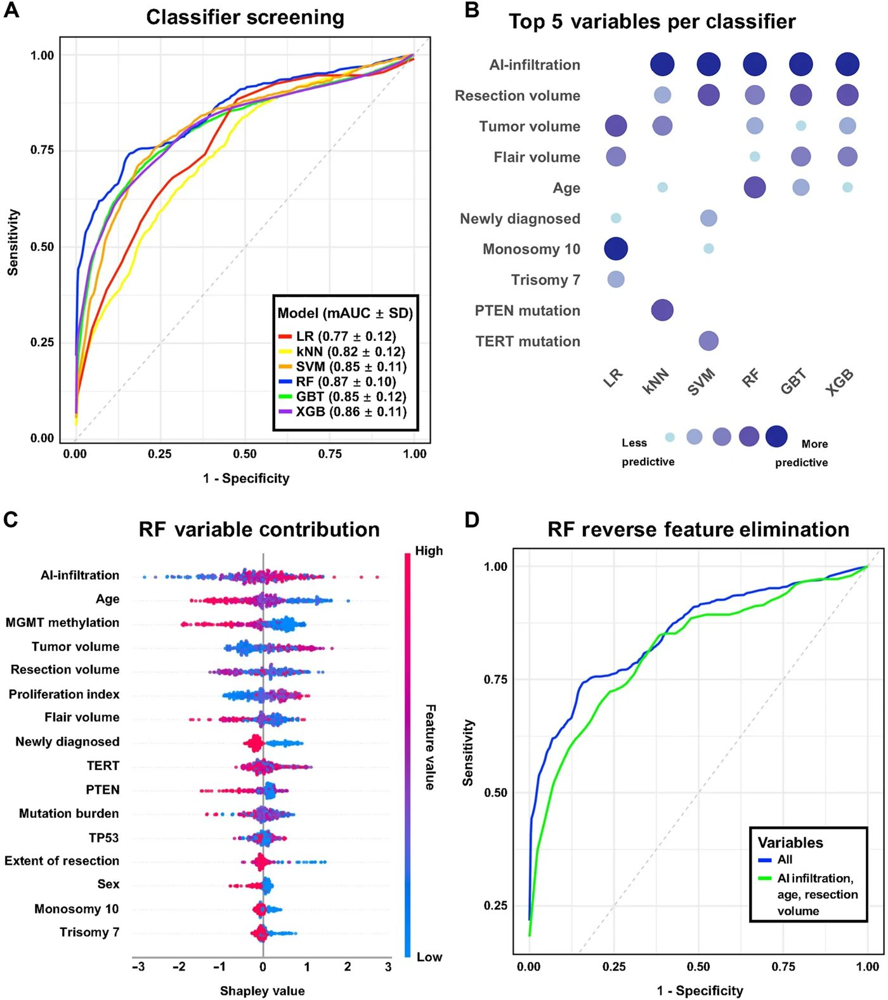
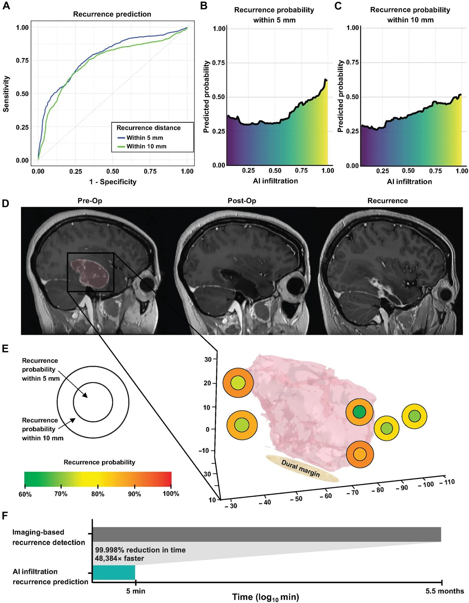

Как оптическая микроскопия и искусственный интеллект помогают предугадать рецидив глиобластомы

Полное описание рисунка
Характеристики пациентов и образцов для обучающей когорты. (A) Онкопринт, детализирующий индивидуальные характеристики пациентов всей обучающей когорты UCSF (n = 60), включая клинические, радиологические и молекулярные признаки. (B) Схематическое представление рабочего процесса исследования, в котором у пациентов, перенесших резекцию, берется один образец из центра опухоли и несколько образцов из краев, анализируемых на уровне пикселей с использованием SRH. Результатом для каждого образца является значение инфильтрации. Иллюстрация: Н. Сиривансанти. (C) Относительное распределение образцов краев каждого пациента по отношению к их опухоли с использованием евклидовых расстояний, нанесенное на график с визуальным представлением наименьшего, медианного и наибольшего объемов опухоли. (D) Графики ядерной оценки плотности, демонстрирующие униполярное и приблизительно симметричное распределение образцов, центрированных вокруг 0 по осям x, y и z.
Глиобластома считается одной из самых агрессивных опухолей мозга, и практически у всех пациентов болезнь со временем возвращается. Главная сложность заключается в том, чтобы вовремя понять, где именно возникнет новый очаг. Исследователи предложили использовать комбинацию оптической микроскопии без химического окрашивания и искусственного интеллекта. Метод позволяет прямо во время операции оценить микроскопическую инфильтрацию опухолевых клеток в краях удаляемой ткани и предсказать место рецидива.
Главное
- Стимулированная рамановская гистология позволяет оценить инфильтрацию глиобластомы без красителей
- Алгоритм FastGlioma предсказывает зоны рецидива опухоли с точностью AUC до 80% на валидации
- Оптический показатель инфильтрации оказался информативнее стандартных генетических маркеров
Подробнее
Глиобластома (астроцитарная опухоль высокой степени злокачественности) характеризуется неизбежным развитием рецидива, который у 75% пациентов возникает в непосредственной близости от краев полости резекции (хирургического удаления). Для прогнозирования точек повторного роста ткани был использован метод стимулированной рамановской гистологии (SRH — оптическая микроскопия, базирующаяся на нелинейном рассеянии света и не требующая окрашивания образцов) в сочетании с алгоритмом FastGlioma. Модель оценивает степень инфильтрации опухолевых клеток (значение AI-infiltration от 0 до 1) на основе анализа биохимического контраста свежеизвлеченных тканей.
В исследовании проанализирована когорта из 80 пациентов с глиобластомой дикого типа по гену IDH, у которых суммарно забрали 367 образцов ткани из краев операционной полости и получили 133 454 оптических изображения. Уровень опухолевой инфильтрации (AI-infiltration) в образцах из зон последующего рецидива оказался статистически значимо выше по сравнению с нерецидивирующими участками (P = 0.03). Классификатор на основе машинного обучения Random Forest, объединивший данные AI-infiltration, клинические и молекулярные параметры, показал среднюю площадь под ROC-кривой (AUC) 87% ± 10,0 на обучающей выборке (n = 60) и 80% (95% доверительный интервал: 0,64–0,97) на валидационной когорте (n = 20).
Показатель оптической инфильтрации AI-infiltration внес наибольший вклад в точность предсказания, превзойдя стандартные молекулярные маркеры опухоли, такие как мутации в генах TERT, TP53 или метилирование промотора MGMT. Модель успешно прогнозировала риск развития локального рецидива в радиусе 5 и 10 мм от точки забора каждого конкретного образца.
Ограничения
Исследование ограничено небольшой выборкой пациентов из двух центров и требует проспективной валидации в клинических испытаниях перед внедрением в хирургическую практику.
Полный перевод статьи
Резюме
Фокальный рецидив рака после стандартной терапии является одной из основных причин высокой смертности при злокачественных новообразованиях солидных органов. Управление рецидивом представляет особую сложность для пациентов с глиобластомой (ГБМ) — неизлечимым заболеванием с медианой общей выживаемости 17 месяцев (1). Стандарт лечения при первичном диагнозе включает максимально безопасную резекцию с последующей сопутствующей лучевой и химиотерапией, что улучшает общую выживаемость; однако эти методы не обеспечивают длительного эффекта, так как почти у всех пациентов наступает рецидив (2–4). Ведение поздних стадий заболевания после неэффективности первичного лечения остается фундаментальной проблемой, влияющей на выживаемость пациентов, при отсутствии эффективных методов терапии в течение последних двух десятилетий. Около 130 клинических испытаний не смогли показать эффективность для пациентов с рецидивирующей ГБМ, при этом связанные с ними затраты превысили 1,5 миллиарда долларов США (5, 6). У трех из четырех пациентов рецидив ГБМ возникает в полости резекции или вблизи ее краев (1, 4, 7). Было разработано несколько методов структурной и метаболической визуализации для оценки рецидива опухоли после того, как он произошел и стал радиографически очевидным (8). Однако, учитывая близость рецидива опухоли к месту первичного поражения у большинства пациентов, количественная оценка микроскопической инфильтрации опухоли по краю резекции позволяет прогнозировать будущий рецидив. Традиционная гистология клинических образцов является трудоемкой и требует много времени, что ограничивает масштабируемость (9–12). Оценки инфильтрации ГБМ с помощью искусственного интеллекта (ИИ) на основе необработанных хирургических тканей решают эту проблему, объединяя оптическую микроскопию [стимулированную рамановскую гистологию (SRH)] с визуальными фундаментальными моделями, обученными на наборе данных из более чем 11 000 образцов тканей опухолей головного мозга (13–21). В данной работе мы стремимся разработать предиктор рецидива ГБМ с использованием ИИ-модели инфильтрации опухоли с открытым исходным кодом под названием FastGlioma, которая измеряется по образцам краев опухоли, полученным во время первичной хирургической резекции. Популяция пациентов с ГБМ, как с рецидивом, так и без него, была использована для обучения ИИ-модели прогнозированию рецидива в пределах 5 и 10 мм от каждого места взятия образца. Образцы тканей с краев резекции ГБМ могут предоставить врачам клинически значимую информацию, прогнозирующую будущий рецидив, прокладывая путь к таргетной прецизионной медицине и терапии, направленной на опухоль, на поздних стадиях заболевания, когда стандартные методы лечения отсутствуют.
В период с мая 2022 года по март 2025 года была сформирована многонациональная многоцентровая когорта пациентов с IDH-диким типом ГБМ, которым была проведена резекция опухоли и забор образцов краев опухоли с пространственной аннотацией образцов тканей для анализа гистопатологии и визуализации с помощью стимулированной рамановской гистологии (SRH). Вся когорта состояла из 84 пациентов: 60 пациентов из Калифорнийского университета в Сан-Франциско (UCSF) и 24 пациента из Венского медицинского университета. Хотя распределение образцов краев различалось между учреждениями (Рис. SN, fig. S2A), различий в выживаемости без прогрессирования между учреждениями при анализе пациентов с образцами краев опухоли менее 25%, 26–50% и 51–75% не выявлено (Рис. SN, fig. S2B). Учитывая опасения по поводу систематических ошибок выборки в учреждениях, остальные наши анализы были проведены на наборах данных разработки в рамках когорты UCSF с дополнительной проспективной внутренней валидационной когортой из еще 20 пациентов из системы здравоохранения UCSF. В обучающей когорте UCSF из 60 пациентов у 43 развился рецидив ГБМ на основании критериев Response Assessment in Neuro-Oncology (RANO) 2.0 (Рис. 1A). Между когортами не было выявлено существенных различий в демографических (пол и возраст), клинических (адъювантная химиолучевая терапия) или радиографических (объем опухоли, объем FLAIR и степень резекции) характеристиках (Рис. 1A и Таблица 1). Пациенты, у которых возник рецидив опухоли, показали значительно более высокий процент мутаций TP53 по сравнению с теми, у кого рецидива не было (47 против 18%, P = 0,05, точный тест Фишера).
Полное описание рисунка
Характеристики пациентов и образцов для обучающей когорты. (A) Онкопринт, детализирующий индивидуальные характеристики пациентов всей обучающей когорты UCSF (n = 60), включая клинические, радиологические и молекулярные признаки. (B) Схематическое представление рабочего процесса исследования, в котором у пациентов, перенесших резекцию, берется один образец из центра опухоли и несколько образцов из краев, анализируемых на уровне пикселей с использованием SRH. Результатом для каждого образца является значение инфильтрации. Иллюстрация: Н. Сиривансанти. (C) Относительное распределение образцов краев каждого пациента по отношению к их опухоли с использованием евклидовых расстояний, нанесенное на график с визуальным представлением наименьшего, медианного и наибольшего объемов опухоли. (D) Графики ядерной оценки плотности, демонстрирующие униполярное и приблизительно симметричное распределение образцов, центрированных вокруг 0 по осям x, y и z.
Важно
ИИ-модель FastGlioma, обученная на 60 пациентах, показала, что мутации TP53 чаще встречаются при рецидивирующей ГБМ (47% против 18%), а объем резекции и инфильтрация являются ключевыми предикторами.
Свежие образцы тканей были взяты с хирургических краев полостей резекции для оценки микроскопической инфильтрации ГБМ с использованием SRH (Рис. 1B) (17, 21). Бескрасочная оптическая визуализация выполнялась с помощью SRH на хирургических образцах, при этом контраст изображения создавался на основе внутренних биохимических свойств образца, что исключало необходимость в тканевых красителях. Оценка инфильтрации ГБМ была получена с помощью фундаментальной модели SRH FastGlioma, называемой AI-infiltration, которая была построена на основе тканей из 13 медицинских центров и включала данные визуализации более 3000 пациентов, охватывающих весь диагностический спектр опухолей центральной нервной системы (21). Модель FastGlioma использует слой линейного скоринга слайдов для вывода одного скалярного значения от 0 до 1, которое указывает на степень инфильтрации опухоли в полнокадровом изображении SRH. Обучение модели для выявления ранних очагов фокального рецидива проводилось на 60 пациентах, содержащих 273 образца, при этом медианное количество участков, взятых по краю на одного пациента, составляло 4,5 (от 3,0 до 5,0), без существенной разницы в количестве образцов между когортами с рецидивом и без него (Таблица 1). В когорте пациентов с рецидивом медиана времени до рецидива составила 5,5 месяцев (от 3,0 до 9,3). С помощью экспертного ручного осмотра образцы были определены как рецидивирующие или нерецидивирующие. Сравнивая интраоперационные навигационные снимки, послеоперационную визуализацию и визуализацию на момент рецидива, 59 участков образцов были определены как места рецидива, а 214 — как нерецидивирующие участки.
Образцы краев, взятые из областей, непосредственно прилегающих к опухоли или полости резекции, были пространственно картированы в трехмерном (3D) пространстве путем вычисления евклидова расстояния между каждым основным образцом пациента (использованным в качестве эталонной координаты) и соответствующими образцами краев (Рис. 1C). Этот подход использовался для стандартизации относительного пространственного позиционирования у разных пациентов. Визуальный осмотр этого графика продемонстрировал широкое распределение образцов вокруг каждой полости резекции без значительной кластеризации образцов. Графики ядерной плотности продемонстрировали унимодальное и приблизительно симметричное распределение образцов по осям x, y и z, что дополнительно подтверждает нормальное распределение образцов (Рис. 1D). Для дальнейшей оценки распределения образцов среднее стандартное отклонение (SD) парных расстояний между образцами краев использовалось как мера вариабельности дисперсии образцов (Рис. SN, fig. S4A). Между пациентами, у которых возник рецидив, и теми, у кого его не было, не было существенной разницы в степени дисперсии образцов, что указывает на сопоставимое распределение образцов внутри пациентов между когортами (нерецидивирующие: 17 ± 5,7 мм; рецидивирующие: 17 ± 5,4 мм; P = 0,98, независимый t-тест). Чтобы оценить потенциальную предвзятость того, что рецидивирующие образцы берутся ближе к ядру и, следовательно, имеют ожидаемую более высокую степень инфильтрации, было рассчитано расстояние для каждого образца края до соответствующего основного образца (Рис. SN, fig. S4B). При сравнении этого расстояния между образцами, которые рецидивировали, и теми, которые не рецидивировали, существенной разницы не было [нерецидивирующие: 29 мм (от 21 до 39); рецидивирующие: 32 мм (от 22 до 44), P = 0,18, критерий Вилкоксона].
Пояснение
SRH (стимулированная рамановская гистология) — метод визуализации, позволяющий видеть структуру ткани без окрашивания, анализируя вибрации молекул. FastGlioma — ИИ-модель, которая по этим данным оценивает степень инфильтрации опухоли.
Соавтор-невропатолог М.П. проанализировал ткань, полученную с краев полости резекции, используя гистологические методы и оптическую микроскопию, чтобы определить влияние инфильтрации опухоли на рецидив. Оценка невропатолога с использованием окрашивания гематоксилином и эозином (H&E) и p53 ранжировала степень инфильтрации опухоли в каждом образце (называемую path-infiltration). В случаях, когда p53 был дикого типа, опухолевые клетки идентифицировались на основе морфологии (т.е. увеличенные ядра, нерегулярные границы ядер, гиперхромия и т.д.) на рутинных слайдах, окрашенных H&E. Инфильтрация пути в каждом образце была аннотирована для порядкового метрического обучения с использованием валидированной четырехбалльной шкалы: (0) нормальная ткань мозга/опухоль отсутствует; (1) атипичные клетки/возможная опухоль, но не окончательно; (2) редкая инфильтрация опухоли; (3) плотная инфильтрация опухоли (21) (Рис. 2A). Образцы опухолей для path-infiltration составили набор данных из 32 основных образцов от 32 пациентов со 137 образцами краев. Оптическая микроскопия без меток с использованием ИИ была использована для генерации нормализованного значения инфильтрации опухоли (называемого AI-infiltration) для полнокадровых оптических изображений образцов, взятых с краев полости резекции, на основе недавно опубликованной модели FastGlioma (21). Взаимосвязь между аннотированной патологоанатомом инфильтрацией ткани (path infiltration) и AI-infiltration по группам продемонстрировала корреляцию инфильтрации по всем измерениям (Рис. 2B). Медиана AI-infiltration для образцов с порядковой оценкой патолога составляла: 0, опухоль не выявлена = 0,31 (от 0,22 до 0,45); 1, атипичные клетки = 0,38 (от 0,28 до 0,54); 2, редкая инфильтрация опухоли = 0,68 (от 0,55 до 0,84); и 3, плотная инфильтрация опухоли = 0,93 (от 0,88 до 0,98). Парные критерии Вилкоксона с поправкой Бонферрони были выполнены для сравнения медианной инфильтрации для каждой группы гистопатологии. Существенные различия наблюдались между 0 и 2 (P = 1,9 × 10⁻⁷), 0 и 3 (P = 2,0 × 10⁻¹¹), 1 и 2 (P = 8,7 × 10⁻¹¹), 1 и 3 (P = 1,3 × 10⁻⁸) и 2 и 3 (P = 5,4 × 10⁻⁶), в то время как существенной разницы между группами 0 и 1 не было (P = 1,0).

Полное описание рисунка
Значения инфильтрации, полученные с помощью ИИ на основе SRH, коррелируют с локальным рецидивом глиобластомы (ГБМ). (A) Образцы центра опухоли (n = 32) и краев (n = 137) были окрашены H&E и p53 патоморфологами для определения степени инфильтрации по шкале от 0 до 3 (0, нормальная ткань мозга/отсутствие опухоли; 1, атипичные клетки/возможная опухоль; 2, редкая инфильтрация опухоли; 3, плотная инфильтрация опухоли). Инфильтрация ИИ для каждого образца ткани была проанализирована с использованием FastGlioma, вычисленного с помощью рамановской гистологии (B). Сравнение патологической инфильтрации образцов краев и инфильтрации ИИ показало корреляцию со значительными различиями в медианной инфильтрации между группами гистопатологии (0 = 0,31 (0,22–0,45), 1 = 0,38 (0,28–0,54), 2 = 0,68 (0,55–0,84) и 3 = 0,93 (0,88–0,98), парные критерии Вилкоксона с поправкой Бонферрони). Значительные различия наблюдались между группами 0 и 2 (P = 1,9 × 10⁻⁷), 0 и 3 (P = 2,0 × 10⁻¹¹), 1 и 2 (P = 8,7 × 10⁻¹¹), 1 и 3 (P = 1,3 × 10⁻⁸) и 2 и 3 (P = 5,4 × 10⁻⁶). (C) Патологическая инфильтрация подтвердила значительную разницу в медианных значениях образцов центра и краев с использованием критерия Вилкоксона (центр: 3 (3–3), край: 2 (1–2), P = 5,0 × 10⁻¹¹). (D) При разделении на когорты образцов, которые дали рецидив, и образцов, которые не дали рецидив, рецидивирующие образцы продемонстрировали значительно более высокое распределение инфильтрации (без рецидива: 2 (0–2), асимметрия: -0,40; рецидив: 2 (1–3), асимметрия: -0,53, P = 0,02) с использованием критерия Вилкоксона. Во всей совокупности образцов (n = 273) критерий Вилкоксона для инфильтрации ИИ продемонстрировал схожие значимые результаты с (E) увеличенными медианными значениями инфильтрации в образцах центра (центр: 0,95 (0,91–0,98), край: 0,61 (0,41–0,87), P = 8,0 × 10⁻¹⁷) и (F) увеличенными медианными значениями инфильтрации в рецидивирующих образцах краев (без рецидива: 0,60 (0,41–0,86), рецидив: 0,74 (0,50–0,90), P = 0,03).
Чтобы подтвердить, что все образцы ядра опухоли демонстрировали инфильтративные опухолевые клетки, распределение path infiltration сравнивалось между образцами ядра и образцами краев (Рис. 2C). Образцы, взятые из ядра, показали значительно более высокую медианную инфильтрацию опухолевых клеток по сравнению с образцами краев [ядро: 3 (3–3); край: 2 (1–2), P = 5,0 × 10⁻¹¹, критерий Вилкоксона]. Чтобы определить взаимосвязь между инфильтрацией и рецидивом на уровне образца (а не пациента), образцы краев были разделены на когорты образцов, которые рецидивировали (n = 38), и тех, которые не рецидивировали (n = 99). Образцы краев опухоли, которые рецидивировали, продемонстрировали значительно большую степень инфильтрации, определенную гистологически (медианный балл нерецидивирующих образцов: 2 (от 0 до 2), асимметрия: -0,40; рецидивирующих образцов: 2 (от 1 до 3), асимметрия: -0,53, P = 0,02, критерий Вилкоксона) (Рис. 2D). Эти же результаты подтвердились при сравнении ИИ-генерируемой инфильтрации для ядра (n = 60) и образцов краев (n = 273), а также рецидивировавших (n = 59) и нерецидивировавших образцов (n = 214). Медиана AI-infiltration для образцов ядра была значительно выше, чем для образцов краев [ядро: 0,95 (от 0,91 до 0,98); край: 0,61 (от 0,41 до 0,87), P = 8,0 × 10⁻¹⁷, критерий Вилкоксона] (Рис. 2E), а медиана AI-infiltration в рецидивирующих образцах краев была значительно выше, чем в образцах краев, которые не рецидивировали (нерецидивирующие: 0,60 (от 0,41 до 0,86); рецидивирующие: 0,74 (от 0,50 до 0,90), P = 0,03, критерий Вилкоксона) (Рис. 2F). Чтобы определить взаимосвязь между инфильтрацией и фокальным рецидивом, была выполнена логистическая регрессия с использованием только path infiltration в качестве предиктора (mAUC = 0,59 ± 0,20) и только AI-infiltration в качестве предиктора (mAUC = 0,62 ± 0,17) (Рис. SN, fig. S5). Эти результаты предполагают сходство между гистопатологией и ИИ-генерируемыми мерами инфильтрации ГБМ в образцах ядра и краев опухоли, которые по отдельности неадекватно предсказывают фокальный рецидив. Учитывая, что сложное взаимодействие факторов, включая инфильтрацию опухоли, определяет рецидив опухоли солидных органов, следующим шагом было построение прогностической модели рецидива ГБМ с использованием инфильтрации, онкологических и клинических переменных.
Несколько онкологических и молекулярных переменных связаны с рецидивом ГБМ. Однако остается неизвестным, какие признаки предсказывают фокальный рецидив. Были разработаны модели машинного обучения для рецидива ГБМ, включающие переменные как на уровне образца, так и на уровне отдельного пациента, включая AI-infiltration, клинические переменные, онкологические переменные и таргетное секвенирование следующего поколения. Рабочий процесс выбора и обучения модели описан на Рис. SN, fig. S6. Были проверены шесть моделей классификатора с использованием выбранных переменных: логистическая регрессия (LR), k-ближайших соседей (k-NN), машины опорных векторов (SVM), случайный лес (RF), градиентный бустинг деревьев (GBT) и экстремальный GBT (XGB) (Рис. 3A). Каждая модель была обучена с использованием 10-кратной стратифицированной внутренней перекрестной проверки. RF оказалась наиболее прогностической моделью рецидива с mAUC 87% ± 10. Модель рецидива была впоследствии валидирована с использованием уникальной проспективной внутренней когорты из 20 дополнительных пациентов с ГБМ, включая 98 образцов краев опухоли, что дало AUC 80% (95% доверительный интервал: от 0,64 до 0,97; бутстреп, 2000 повторных выборок). Для каждой модели классификатора проводилось взвешивание признаков и анализировался вклад каждой переменной в производительность модели. AI-infiltration была определена как единственная наиболее прогностическая переменная в пяти из шести протестированных классификаторов (Рис. 3B). Аддитивные значения объяснения Шепли для каждой переменной в модели RF определили вклад и направленность каждой переменной в производительность модели (Рис. 3C). AI-infiltration внесла большой вклад в прогнозирование рецидива, при этом повышенная инфильтрация приводила к более высокой вероятности рецидива, а сниженная инфильтрация — к более низкой вероятности рецидива.


Полное описание рисунка
Скрининг классификаторов и обучение моделей. (A) Десятикратная внутренняя стратифицированная перекрестная проверка была проведена с использованием шести различных моделей классификаторов (LR, kNN, SVM, RF, GBT и XGB). RF была определена как модель с наилучшей производительностью с mAUC 87% ± 10. (B) Основные предикторы рецидива образцов краев в разных моделях классификаторов показали, что инфильтрация ИИ была наиболее значимой переменной для пяти из шести моделей. (C) Анализ Шепли для модели с наилучшей производительностью продемонстрировал направленность и влияние каждой переменной на производительность модели. (D) Обратное исключение признаков в модели RF использовалось для создания наиболее обобщаемой модели при сохранении клинической полезности. Было определено, что эта модель использует только инфильтрацию ИИ, возраст и объем полости резекции в качестве переменных с mAUC 82% ± 12, при этом инфильтрация ИИ осталась основным предиктором.
Важно
Модель случайного леса (RF) показала наилучшую точность (AUC 87%) в прогнозировании рецидива, где показатель AI-infiltration стал ключевым фактором, определяющим риск.
После выбора модели ее обобщающая способность была оценена путем определения минимального эффективного количества переменных, необходимых для прогнозирования рецидива образца края при сохранении клинической полезности с порогом AUC 80%. Это было достигнуто путем ручного обратного исключения признаков с порогом AUC, где переменная с наименьшим весом исключалась на каждой итерации, пока не было достигнуто минимальное количество переменных, необходимых для поддержания порога. Это показало, что модель RF может прогнозировать рецидив образца края с минимумом из трех переменных: AI-infiltration, возраст и объем полости резекции (AUC = 82% ± 12) (Рис. 3D).
Мы дополнительно исследовали объем полости резекции как переменную, оценив его взаимосвязь с предоперационным объемом опухоли с помощью линейной регрессии, и обнаружили значительную ассоциацию, однако умеренный коэффициент детерминации (R²) указывает на многофакторный характер (β = 0,52, P < 2,0 × 10⁻¹⁶; R² = 0,40).
Склонность ГБМ к рецидивированию объясняется субпопуляциями злокачественных клеток, устойчивых к химиолучевой терапии, которые могут иметь фокальное региональное представительство в головном мозге. Модели рецидива были уточнены для прогнозирования места рецидива. Чтобы оценить нашу способность прогнозировать близость рецидива по отношению к каждому образцу, мы использовали классификацию RF с тем же набором ранее выбранных переменных для создания моделей прогнозирования рецидива в пределах 5 мм от образца и в пределах 10 мм от образца. Эти модели показали хорошие результаты при прогнозировании рецидива в пределах 5 мм (mAUC: 80% ± 10) и рецидива в пределах 10 мм (mAUC: 76% ± 13) (Рис. 4A). Чтобы понять вклад AI-infiltration в предсказуемость этих моделей, были сгенерированы графики частичной зависимости, демонстрирующие влияние AI-infiltration на вероятность рецидива в пределах 5 и 10 миллиметров, когда все остальные переменные оставались постоянными (Рис. 4, B и C). Иллюстративный пример демонстрирует пространственные прогнозы вероятности рецидива. Т1-взвешенные МРТ-сканы пациента после введения гадолиния показаны для трех временных точек: (i) за 24 часа до операции, (ii) через 48 часов после операции и (iii) контрольная МРТ через 9 месяцев, которая выявила рецидив опухоли (Рис. 4D). Образцы пациента затем были нанесены на график вместе с 3D-представлением их исходной опухоли. Были построены сферы, представляющие вероятность рецидива в пределах 5 (P5mm) и 10 мм (P10mm) от каждого образца (Рис. 4E). Во время первичного удаления опухоли образец 1 вдоль заднего края продемонстрировал AI-infiltration 0,60, P5mm 73% и P10mm 87%. Образец 2 вдоль нижнего края продемонстрировал AI-infiltration 0,94, P5mm 72% и P10mm 90%. Образец 2 соответствовал рецидиву, определенному по визуализации.


Полное описание рисунка
Локализация и прогнозирование рецидива ГБМ с использованием моделирования инфильтрации ИИ. Место рецидива для каждого образца было аннотировано как находящееся в пределах 5 мм или 10 мм. (A) Модели RF были построены для прогнозирования локального рецидива в пределах 5 мм (mAUC: 80% ± 10) и 10 мм (mAUC: 76% ± 13) от каждого образца. (B и C) Графики частичной зависимости продемонстрировали влияние инфильтрации ИИ на вероятность рецидива в пределах 5 и 10 мм, когда все остальные переменные оставались постоянными. (D) Показаны Т1-взвешенные сагиттальные МРТ с контрастированием гадолинием у иллюстративного пациента за 24 часа до операции, через 48 часов после операции и во время рецидива (через 9 месяцев после резекции). (E) На графике представлены опухоль пациента, места взятия образцов и прогнозируемые вероятности рецидива в пределах 5 мм (P5мм) и 10 мм (P10мм) (образец 1: инфильтрация ИИ: 0,60, P5мм: 73%, P10мм: 87%; образец 2: инфильтрация ИИ: 0,94, P5мм: 72%, P10мм: 90%; образец 3: инфильтрация ИИ: 0,21, P5мм: 60%, P10мм: 88%; образец 4: инфильтрация ИИ: 0,99, P5мм: 87%, P10мм: 90%; образец 5: инфильтрация ИИ: 0,57, P5мм: 70%, P10мм: 83%; образец 6: инфильтрация ИИ: 0,63, P5мм: 69%, P10мм: 82%). (F) Инфильтрация ИИ как маркер для локального прогнозирования рецидива — это метод, который позволяет прогнозировать локальный рецидив, дополняя стандартное обнаружение на основе визуализации.
Осторожно
Исследование основано на данных пациентов, прошедших максимальную резекцию; применимость модели к неоперабельным опухолям требует дальнейшего изучения.
ГБМ остается одним из самых сложных и неизлечимых диагнозов из-за частого рецидивирования, несмотря на резекцию опухоли, цитотоксическую химиотерапию, лучевую терапию и таргетную молекулярную терапию. Рецидив чаще всего возникает по краям полости резекции (4). Чтобы локализовать региональную специфичность неудачи лечения, в этом исследовании мы протестировали и внутренне валидировали модели ИИ-инфильтрации рецидива с помощью оптической микроскопии. Этот метод быстрой количественной оценки инфильтрации опухоли продемонстрировал способность прогнозировать фокальный рецидив ГБМ с использованием необработанных образцов тканей, полученных во время первичного удаления опухоли с краев полости резекции. Эти результаты лягут в основу будущих таргетных методов прецизионной медицины для пациентов с поздней стадией заболевания. Наши результаты продемонстрировали взаимосвязь между инфильтрацией злокачественных клеток и предсказуемостью фокального рецидива после химиолучевой терапии.
Вся когорта пациентов для этого многоцентрового ретроспективного исследования была получена из числа пациентов, ранее набранных для интраоперационной визуализации SRH в период с марта 2022 года по март 2025 года. Для когорты UCSF было проанализировано более 400 пациентов и 2200 образцов в период с марта 2022 года по январь 2024 года, из которых вложенная субпопуляция из 60 пациентов с 273 образцами была включена в обучающую когорту этого исследования. Критерии включения включали любого пациента в возрасте старше 18 лет с подтвержденной патологией ГБМ IDH-дикого типа, которому была проведена интраоперационная визуализация SRH во время резекции. Используя те же критерии, была определена тестовая когорта UCSF для внутренней валидации, состоящая из 20 пациентов с 98 образцами, которые прошли резекцию и интраоперационную визуализацию SRH в период с февраля по июль 2024 года. Исследование было одобрено Институциональным наблюдательным советом (IRB) по программе защиты исследований на людях UCSF, и все пациенты предоставили информированное согласие на включение в исследование (UCSF IRB # 17-23215).
Пояснение
RANO 2.0 — международные критерии оценки ответа опухолей головного мозга на терапию, основанные на данных МРТ и клиническом состоянии пациента.
Схема исследования
Статья опубликована в рецензируемом журнале Science advances. Но и опубликованный результат — одно исследование, а не окончательный вывод.
Источник
| Источник | Категория | Лицензия |
|---|---|---|
| Science advances (Europe PMC) | oncology | CC BY-NC 4.0 |
Источники
| Источник | Ссылка |
|---|---|
| Страница статьи | europepmc.org |
| Полный текст (PDF) | europepmc.org |
| DOI | doi.org |
| Метаданные Crossref | api.crossref.org |
| Europe PMC | europepmc.org |